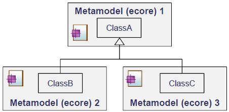
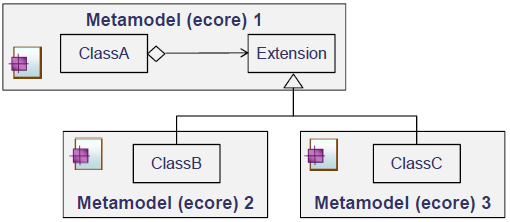

eMDE is a component with a top-level metamodel which enables to support metamodel extensions by aggregation. This component is essentially used for viewpoint development.
EMF enables extensibility only by sub-classing existing classes (see picture bellow). This mechanism enables inheritance of all properties, constraints, and representations (e.g., user interfaces, diagrams). But the type of a model element cannot be changed during its lifecycle.

Kitalpha introduces the mechanism of extension by aggregation, the same model element can be decorated by data from different concerns (i.e. viewpoints).
The picture bellow shows how eMDE introduce the extension by aggregation. Conceptually, ClassA aggregates ClassB and ClassC.
